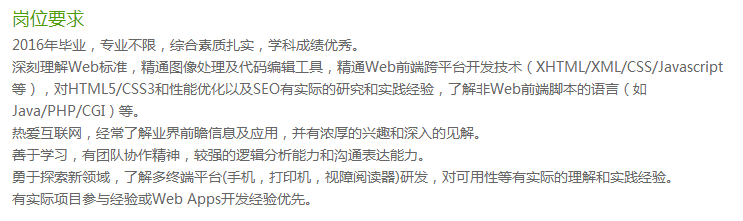
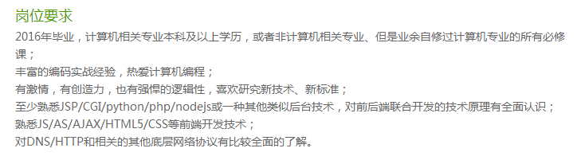
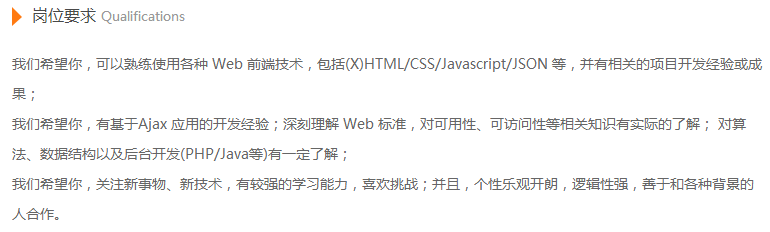

By Tim Tsang form Guangdong University of Technology
阿里巴巴：内推电话一面 -> 挂在一面
网易：简历都没有通过，直接被鄙视
腾讯：内推电话一面 -> 后来就没收到任何消息了
有米广告：笔试 -> 一面 -> 二面 -> HR面 -> 口头offer
腾讯校招：笔试 -> 一面 -> 二面 -> HR面 -> 实习offer
阿里巴巴校招：笔试 -> 一面 -> 挂在一面
1、竞争的确是挺激烈的，所以一定要复习，不复习一定会死的很惨 2、大公司都是比较重视基础和是实战能力的，缺一不可 4、脸皮厚是件好事，不要错失任何一次机会，即使知道自己90%会挂 5、提前了解各大公司的岗位要求，提前做好准备 6、对自己进行定位，进行正确的岗位选择
腾讯-网页重构-设计类
腾讯-Web前端开发-技术类
阿里巴巴-Web前端开发-技术类

1、计算机基础课程：数据结构与算法、计算机网络、操作系统......
2、JavaScript基础（《JavaScript高级程序设计》
或者《JavaScript权威指南》）
3、CSS基础（《CSS权威指南》）
4、性能优化（《JavaScript性能优化》）
5、Web前端安全（《白帽子讲Web安全》）
6、HTML5、CSS3、响应式、nodejs/php/java
7、自动化构建工具，模块化开发
8、基础知识的复习过程也是一个学习过程
1、不要以为技术很牛逼就一定能进大公司，面试技巧也是相当重要的 2、面试的时候要自信，要诚信 3、正确对待面试，它只是一份工作，态度很重要 4、正确对待网上的面经 5、越努力越幸运，珍惜每一次的机会，获取经验很重要 6、不仅仅为了面试，我们需要时刻面对挑战
1、其实我们真的并不比名校的同学差，学校只是一个敲门砖 2、不要因为一些小的失败和挫折而轻易否定自己，学会提高自己打抗压能力 3、积极地向身边的大神学习，他们都是很宝贵的资源 4、学会团队合作、处理好人际关系，提升自身修养是很重要的，团队越大越明显 5、珍惜每一次的项目实战，不要因为学不到新的技术而不想去做， 其实项目给我们的锻炼不仅仅是学到新的技术知识，以后你就会有意想不到的收获